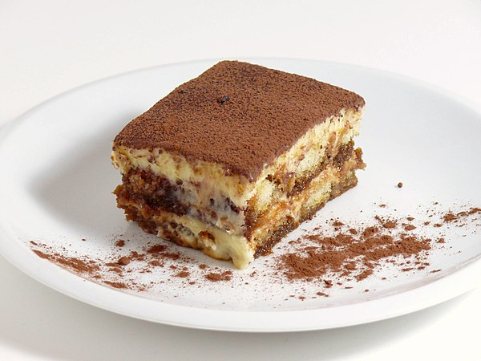

Home
Ricardo's Tiramisu

Description
Indulge in the ultimate Italian classic, reimagined to perfection. Our tiramisu layers delicate, espresso-soaked ladyfingers with a luxuriously smooth mascarpone cream, lightly sweetened and infused with a hint of vanilla. Each bite melts in your mouth, balanced by the bold richness of fresh-brewed coffee and a whisper of dark cocoa. Finished with a dusting of premium cocoa powder and a chill that brings all the flavors together, this tiramisu is velvety, bold, and utterly unforgettable—just like the first time you fell in love with dessert.
Ingredients
- 1 cup (250ml) sugar
- ¾ cup (180ml) espresso or strong coffee, hot
- ¼ cup (60ml) milk
- 2 tbsp (30ml) coffee liqueur (such as Tia Maria)
- 5 egg yolks
- ½ tsp (2.5ml) vanilla
- 17 to 18 oz (475 to 500g) mascarpone cheese, at room temperature
- 1 ½ cups (375ml) 35% cream
- 30 ladyfingers
- 2 tbsp cocoa powder, sifted
Steps
- In a small bowl, combine the coffee with 2 tbsp of the sugar. Add the milk and coffee liqueur. Refrigerate until needed.
- In a bowl, whisk the egg yolks, vanilla and 1/4 cup (60 ml) of the sugar. Place the bowl over a saucepan of simmering water and continue whisking until the mixture forms a ribbon as it falls from the whisk, about 5 minutes. Remove the bowl from over the saucepan and continue whisking with an electric mixture until the mixture is only just warm. Add the mascarpone and mix to combine. Set aside.
- In another bowl, whisk the cream and remaining sugar (2/3 cup/150 ml) until firm peaks form. Using a spatula, gently fold the cream mixture into the mascarpone mixture.
- Cover the bottom of an 11 x 8-inch (28 x 20 cm), 10-cup (2.5 litre) rectangular dish with ladyfingers, first dipping them in the coffee mixture for 2 to 3 seconds each. Break the ladyfingers as needed to make them fit. Cover with half of the mascarpone mixture. Sprinkle half of the cocoa powder over the mascarpone mixture. Repeat with the remaining ingredients, ending with the cocoa powder. Cover with plastic wrap and refrigerate for at least 4 hours or preferably overnight.